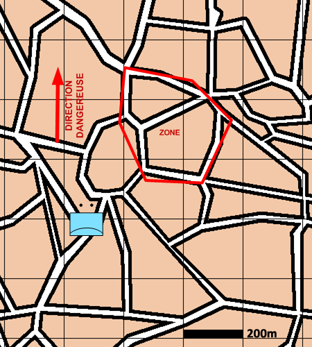

NIVEAU : Pion
ARME : ASA
MISSION : Défendre
NIVEAU : Pion
ARME : ASA
MISSION : Défendre
Schéma de modélisation |
Paramètres obligatoiresZoneZone à protéger. |
|
Paramètres optionnelsPosition de déploiementMode de déploiement Direction Dangereuse Limite gauche / limite droite Lignes de début et fin de mission [LDM/LFM] |
||
 |
Fiches missions |  |